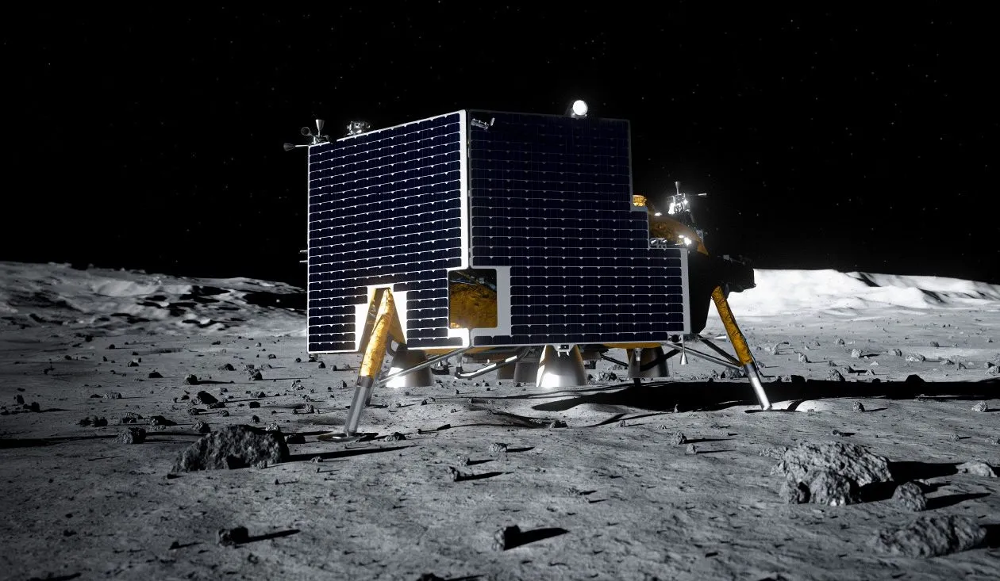
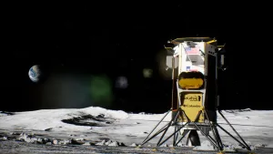
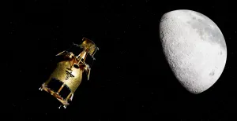
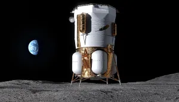

Artemis III
Summer 2027
Artemis III will test one or both lunar landers provided by Blue Origin and SpaceX. This four day mission will perform crew science experiments while performing docking tests with those lunar landers to prepare for Artemis IV

Griffin 1 will deliver the largest payload ever delivered to the moon.

Payload delivery to the Lunar South Pole part of the Commercial Lunar Payload Services (CLPS) Contract
Artemis III will test one or both lunar landers provided by Blue Origin and SpaceX. This four day mission will perform crew science experiments while performing docking tests with those lunar landers to prepare for Artemis IV
$117 million contract to deliver six lunar experiment payloads for NASA and ESA. IM-3 is part of NASA's CLPS program.

Part of the CLPS Program, Firefly Aerospace will deliver six international payloads to the surface using their Blue Ghost lander and into orbit using the Elytra Orbiter.

Blue Origin's Blue Moon Mark 1 lander will deliver scientific payloads to the lunar surface and demonstrate lunar landing capabilities for Artemis IV

Artemis IV will land four astronauts on the lunar surface marking humanities' return to the moon for the first time since 1972.